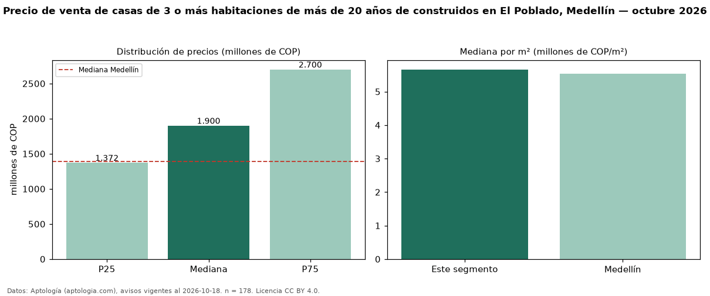

Precio de venta de casas de 3 o más habitaciones de más de 20 años de construidos en El Poblado, Medellín — octubre 2026
Con 178 avisos vigentes, el precio mediano de casas de 3 o más habitaciones de más de 20 años de construidos en venta en El Poblado, Medellín es COP 1,90 mil millones. Frente a la mediana de las casas de 3 o más habitaciones en venta de El Poblado (COP 2,00 mil millones, n = 1.056), queda 5 % por debajo; este segmento reúne el 17 % de esos avisos. Por metro cuadrado, la mediana es COP 5,66 millones/m² (n = 175), 10 % por debajo de las casas de 3 o más habitaciones en venta de El Poblado (COP 6,29 millones/m²). El área mediana anunciada es 307 m². La administración mediana declarada es COP 1,02 millones al mes (n = 141). La mitad central de los avisos va de COP 1,37 mil millones a COP 2,70 mil millones (razón 2,0), una dispersión moderada. El estrato más frecuente es 6 (92 % de los avisos con estrato). La mediana de todas las casas en venta de Medellín es COP 1,39 mil millones (+37 % de diferencia). Datos: Aptología (aptologia.com), CC BY 4.0 — https://www.aptologia.com/casas-en-venta/medellin/el-poblado. Archivos: PDF, CSV con las cifras y gráfica PNG.

| Avisos únicos | 178 |
|---|---|
| Percentil 25 | COP 1.372.500.000 |
| Mediana | COP 1.900.000.000 |
| Percentil 75 | COP 2.700.000.000 |
| Mediana por m² | COP 5.660.377 |
Fuente: avisos vigentes de portales inmobiliarios recopilados por Aptología, deduplicados (mínimo 30 avisos únicos por celda). Precios pedidos, no cerrados. Fecha: 2026-10-18.